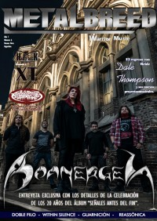

CMnexus
:
Contemporary Christian culture, music, and media.
Magazines
Profiles
Dove Awards
cmnexus.org
CM
nexus
→
Profiles
→
B
Boanerges
On the cover

May 2018
Metalbreed
Media coverage
Oct 1999 in
Enthroned
"Interview: Boanerges"
2009 in
Sangre Suficiente
"Boanerges", by
El Zelote
Apr 2017 in
Metalbreed
"Boanerges", by
Claudia Saavedra
May 2018 in
Metalbreed
"Boanerges", by
Claudia Saavedra
Albums & reviews:
1988:
Battle Mind
1998:
Señales Antes Del Fin
Oct 1999 in
Enthroned
, by
velsignet
2003 in
Holy Steel
, by
Isaia 42,13
2007 in
Sangre Suficiente
2002:
Más Allá Del Umbral
Oct 2004 in
Sangre Suficiente
, by
El Zelote
2009:
Hora novena
2017:
Secreto Original
Feb 2018 in
Metalbreed
, by
Charly Priora
CMnexus
(noun)
The magazine index
of modern music
and Christianity
© 2011 CMnexus. Last updated August 2025.
Contact:
Rants and other correspondence to:
editor -AT- cmnexus
-DØT- org
About